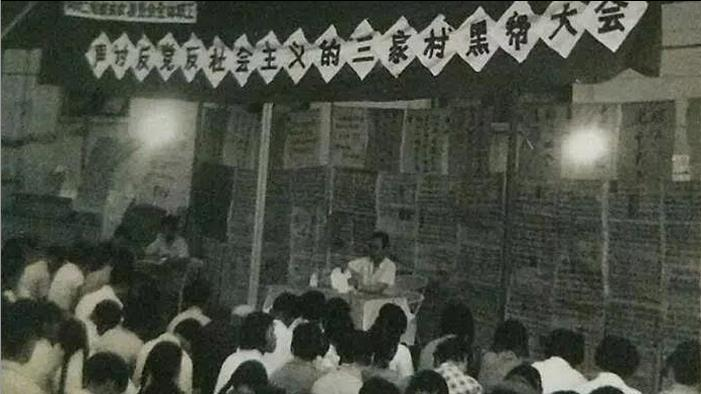
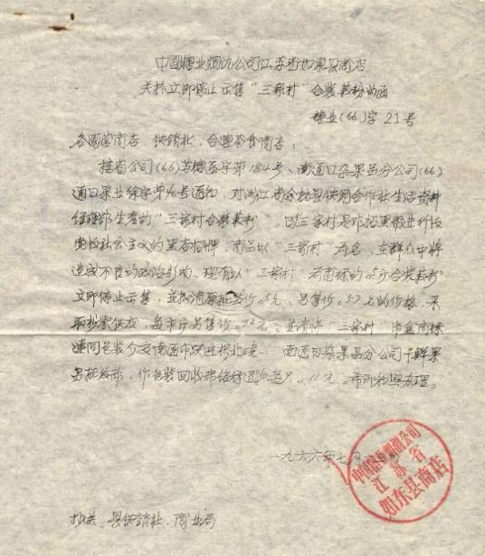

|
回目录 回主页 |
批判吴晗的《海瑞罢官》可以说是文化大革命的导火索，而1966年4月批判所谓的吴晗、邓拓、廖沫沙的“三家村反党集团”可以说是文化大革命的开始，一时间全国各大报纸纷纷刊登文章批判“三家村”集团，并且各地也纷纷深挖“三家村”，出现了许多“小三家村”、“四家店”、“黑店伙计”等等，使许多干部群众受到牵连。

而在批判“三家村”的同时，受文革狂热革命热潮的影响，有些与吴晗、邓拓、廖沫沙的“三家村”毫无关系的商品也被牵连到了，原因仅仅是因为这个商品的牌子叫“三家村”！
笔者收集到一份江苏省如东县商店发出的一份通知函，全文如下：

【中国糖业烟酒公司江苏省如东县商店 关于立即停止出售“三家村”盒装藕粉的函 糖业（66）字 21 号
各国营商店、供销社、合营茶食商店： 接省公司（66）苏糖函字第184号、南通日杂果品分公司（66）通日果业徐字第40号通知，对浙江省余杭县供销合作社生活资料经理部生产的“三家村盒装藕粉”，因“三家村”是邓拓黑帮进行反党反社会主义的黑店招牌，商品以“三家村”为名，在群众中将造成不良的政治影响。现有以“三家村”为商标的0.5斤盒装藕粉立即停止出售，并撤销原批发价0.5元、零售价0.57元的价格，采取拆零供应，每市斤零售价0.92元。并请将“三家村”纸盒商标连同包装介交南通市跃进桥北×——南通日杂果品分公司干鲜果品批发部，作包装回收费结余退款每只0.11元。希即知照办理。 一九六六年七月十三日 中国糖业烟酒公司江苏省如东县商店】 三家村牌的藕粉现在是知名商标，而三家村的藕粉自明清以来就一直在生产，历史已经有了几百年，谁料想1966年偏偏在北京出现了一个名叫“三家村”的反党集团，殃及池鱼，百年品牌，突遭横祸。据网上查询到的资料，当时“三家村”藕粉为了忌讳，便改名为“红卫村”，直到文革结束才恢复原名。笔者查询了一下，除了有“三家村”藕粉外，还有河南焦作的“三家村”酒，全国还有几十个叫“三家村”的地名，不知道这些商品和地名在批判“三家村反党集团”的时候是否也有如此的遭遇？ 此乃文革中一荒唐事，记之。 来源：故纸中的故事 作者：孙陇 |
回目录 回主页 |